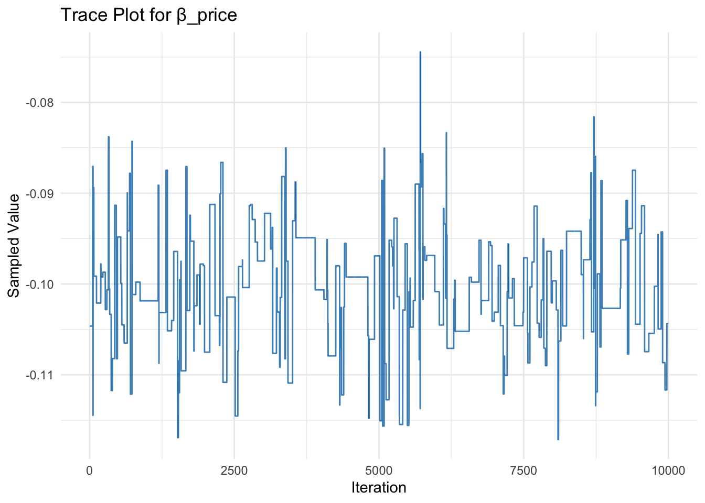
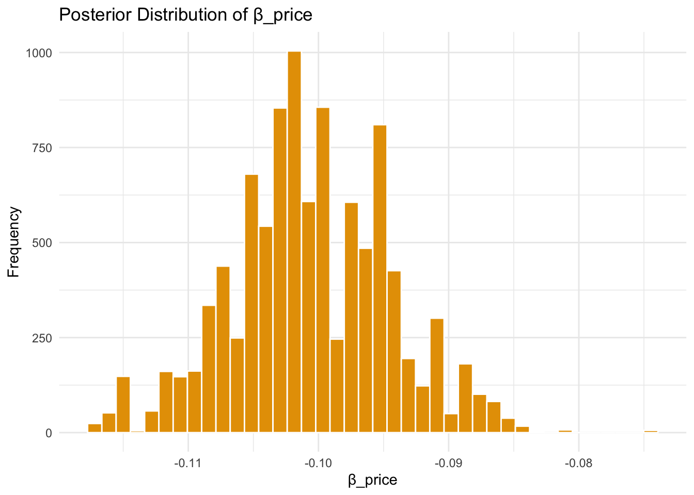

# set seed for reproducibility
set.seed(123)
# define attributes
brand <- c("N", "P", "H") # Netflix, Prime, Hulu
ad <- c("Yes", "No")
price <- seq(8, 32, by=4)
# generate all possible profiles
profiles <- expand.grid(
brand = brand,
ad = ad,
price = price
)
m <- nrow(profiles)
# assign part-worth utilities (true parameters)
b_util <- c(N = 1.0, P = 0.5, H = 0)
a_util <- c(Yes = -0.8, No = 0.0)
p_util <- function(p) -0.1 * p
# number of respondents, choice tasks, and alternatives per task
n_peeps <- 100
n_tasks <- 10
n_alts <- 3
# function to simulate one respondent’s data
sim_one <- function(id) {
datlist <- list()
# loop over choice tasks
for (t in 1:n_tasks) {
# randomly sample 3 alts (better practice would be to use a design)
dat <- cbind(resp=id, task=t, profiles[sample(m, size=n_alts), ])
# compute deterministic portion of utility
dat$v <- b_util[dat$brand] + a_util[dat$ad] + p_util(dat$price) |> round(10)
# add Gumbel noise (Type I extreme value)
dat$e <- -log(-log(runif(n_alts)))
dat$u <- dat$v + dat$e
# identify chosen alternative
dat$choice <- as.integer(dat$u == max(dat$u))
# store task
datlist[[t]] <- dat
}
# combine all tasks for one respondent
do.call(rbind, datlist)
}
# simulate data for all respondents
conjoint_data <- do.call(rbind, lapply(1:n_peeps, sim_one))
# remove values unobservable to the researcher
conjoint_data <- conjoint_data[ , c("resp", "task", "brand", "ad", "price", "choice")]
# clean up
rm(list=setdiff(ls(), "conjoint_data"))Multinomial Logit Model
This assignment expores two methods for estimating the MNL model: (1) via Maximum Likelihood, and (2) via a Bayesian approach using a Metropolis-Hastings MCMC algorithm.
1. Likelihood for the Multi-nomial Logit (MNL) Model
Suppose we have \(i=1,\ldots,n\) consumers who each select exactly one product \(j\) from a set of \(J\) products. The outcome variable is the identity of the product chosen \(y_i \in \{1, \ldots, J\}\) or equivalently a vector of \(J-1\) zeros and \(1\) one, where the \(1\) indicates the selected product. For example, if the third product was chosen out of 3 products, then either \(y=3\) or \(y=(0,0,1)\) depending on how we want to represent it. Suppose also that we have a vector of data on each product \(x_j\) (eg, brand, price, etc.).
We model the consumer’s decision as the selection of the product that provides the most utility, and we’ll specify the utility function as a linear function of the product characteristics:
\[ U_{ij} = x_j'\beta + \epsilon_{ij} \]
where \(\epsilon_{ij}\) is an i.i.d. extreme value error term.
The choice of the i.i.d. extreme value error term leads to a closed-form expression for the probability that consumer \(i\) chooses product \(j\):
\[ \mathbb{P}_i(j) = \frac{e^{x_j'\beta}}{\sum_{k=1}^Je^{x_k'\beta}} \]
For example, if there are 3 products, the probability that consumer \(i\) chooses product 3 is:
\[ \mathbb{P}_i(3) = \frac{e^{x_3'\beta}}{e^{x_1'\beta} + e^{x_2'\beta} + e^{x_3'\beta}} \]
A clever way to write the individual likelihood function for consumer \(i\) is the product of the \(J\) probabilities, each raised to the power of an indicator variable (\(\delta_{ij}\)) that indicates the chosen product:
\[ L_i(\beta) = \prod_{j=1}^J \mathbb{P}_i(j)^{\delta_{ij}} = \mathbb{P}_i(1)^{\delta_{i1}} \times \ldots \times \mathbb{P}_i(J)^{\delta_{iJ}}\]
Notice that if the consumer selected product \(j=3\), then \(\delta_{i3}=1\) while \(\delta_{i1}=\delta_{i2}=0\) and the likelihood is:
\[ L_i(\beta) = \mathbb{P}_i(1)^0 \times \mathbb{P}_i(2)^0 \times \mathbb{P}_i(3)^1 = \mathbb{P}_i(3) = \frac{e^{x_3'\beta}}{\sum_{k=1}^3e^{x_k'\beta}} \]
The joint likelihood (across all consumers) is the product of the \(n\) individual likelihoods:
\[ L_n(\beta) = \prod_{i=1}^n L_i(\beta) = \prod_{i=1}^n \prod_{j=1}^J \mathbb{P}_i(j)^{\delta_{ij}} \]
And the joint log-likelihood function is:
\[ \ell_n(\beta) = \sum_{i=1}^n \sum_{j=1}^J \delta_{ij} \log(\mathbb{P}_i(j)) \]
2. Simulate Conjoint Data
We will simulate data from a conjoint experiment about video content streaming services. We elect to simulate 100 respondents, each completing 10 choice tasks, where they choose from three alternatives per task. For simplicity, there is not a “no choice” option; each simulated respondent must select one of the 3 alternatives.
Each alternative is a hypothetical streaming offer consistent of three attributes: (1) brand is either Netflix, Amazon Prime, or Hulu; (2) ads can either be part of the experience, or it can be ad-free, and (3) price per month ranges from $4 to $32 in increments of $4.
The part-worths (ie, preference weights or beta parameters) for the attribute levels will be 1.0 for Netflix, 0.5 for Amazon Prime (with 0 for Hulu as the reference brand); -0.8 for included adverstisements (0 for ad-free); and -0.1*price so that utility to consumer \(i\) for hypothethical streaming service \(j\) is
\[ u_{ij} = (1 \times Netflix_j) + (0.5 \times Prime_j) + (-0.8*Ads_j) - 0.1\times Price_j + \varepsilon_{ij} \]
where the variables are binary indicators and \(\varepsilon\) is Type 1 Extreme Value (ie, Gumble) distributed.
The following code provides the simulation of the conjoint data.
Note
3. Preparing the Data for Estimation
The “hard part” of the MNL likelihood function is organizing the data, as we need to keep track of 3 dimensions (consumer \(i\), covariate \(k\), and product \(j\)) instead of the typical 2 dimensions for cross-sectional regression models (consumer \(i\) and covariate \(k\)). The fact that each task for each respondent has the same number of alternatives (3) helps. In addition, we need to convert the categorical variables for brand and ads into binary variables.
Reshape and Prepare the data
To estimate the MNL model, we reshape the data so each row represents one alternative in a choice task, and we convert categorical variables (brand, ad) into dummy variables with appropriate reference levels. This format aligns with the model’s structure and allows us to compute utilities for each alternative.
library(dplyr)
Attaching package: 'dplyr'The following objects are masked from 'package:stats':
filter, lagThe following objects are masked from 'package:base':
intersect, setdiff, setequal, union# Load data
conjoint_data <- read.csv("conjoint_data.csv")
# Create dummy variables
conjoint_data <- conjoint_data %>%
mutate(
brand_Netflix = as.integer(brand == "N"),
brand_Prime = as.integer(brand == "P"),
ad_included = as.integer(ad == "Yes")
) %>%
arrange(resp, task)
# Select relevant variables in proper order
X_mat <- conjoint_data %>%
select(resp, task, choice, brand_Netflix, brand_Prime, ad_included, price)
head(X_mat) resp task choice brand_Netflix brand_Prime ad_included price
1 1 1 1 1 0 1 28
2 1 1 0 0 0 1 16
3 1 1 0 0 1 1 16
4 1 2 0 1 0 1 32
5 1 2 1 0 1 1 16
6 1 2 0 1 0 1 244. Estimation via Maximum Likelihood
With the data now organized and all categorical variables transformed into numerical form, we are ready to estimate the parameters of the multinomial logit model. We’ll begin by defining the log-likelihood function. For each respondent-task combination, we calculate the utility of each alternative, convert these utilities into choice probabilities using the softmax function, and compute the total log-likelihood across all observed choices. The estimated coefficients will be those that maximize this likelihood.
Log-Likelihood Function for the MNL Model
# Convert data to a matrix of features and vector of choices
X_vars <- c("brand_Netflix", "brand_Prime", "ad_included", "price")
X <- as.matrix(X_mat[, X_vars])
y <- X_mat$choice
# Index structure
n_obs <- nrow(X_mat)
n_alts <- 3
n_tasks <- n_obs / n_alts
# Log-likelihood function
log_likelihood <- function(beta) {
ll <- 0
for (t in 1:n_tasks) {
# get rows for this task
idx <- ((t - 1) * n_alts + 1):(t * n_alts)
X_t <- X[idx, ]
y_t <- y[idx]
# compute utility and choice probabilities
v <- X_t %*% beta
p <- exp(v) / sum(exp(v))
# accumulate log-prob of chosen alternative
ll <- ll + sum(y_t * log(p))
}
return(-ll) # negative log-likelihood for minimization
}With the log-likelihood function defined, we now estimate the model parameters by maximizing this function using the optim() routine in R. This process yields maximum likelihood estimates (MLEs) for the four coefficients: brand preference (β_netflix and β_prime), advertising presence (β_ads), and price sensitivity (β_price). We also extract the Hessian matrix at the optimum to compute standard errors and construct 95% confidence intervals for each parameter. These intervals quantify the uncertainty around the point estimates and offer insight into which attributes significantly influence consumer choice.
# Starting values for optimization
start_vals <- rep(0, length(X_vars))
# Run optimization
mle_fit <- optim(
par = start_vals,
fn = log_likelihood,
method = "BFGS",
hessian = TRUE
)
# Extract MLEs and Hessian
beta_hat <- mle_fit$par
hess <- mle_fit$hessian
# Compute standard errors from inverse Hessian
se <- sqrt(diag(solve(hess)))
# Construct 95% confidence intervals
z <- qnorm(0.975) # 1.96
lower <- beta_hat - z * se
upper <- beta_hat + z * se
# Combine results into a table
results <- data.frame(
Coefficient = X_vars,
Estimate = beta_hat,
Std_Error = se,
CI_Lower = lower,
CI_Upper = upper
)
# Round numeric columns only
results[, 2:5] <- round(results[, 2:5], 3)
# Print final table
print(results) Coefficient Estimate Std_Error CI_Lower CI_Upper
1 brand_Netflix 0.941 0.111 0.724 1.159
2 brand_Prime 0.502 0.111 0.284 0.719
3 ad_included -0.732 0.088 -0.904 -0.560
4 price -0.099 0.006 -0.112 -0.0875. Estimation via Bayesian Methods
To complement our maximum likelihood estimates, we now take a Bayesian approach to estimate the posterior distribution over the same four parameters using a Metropolis-Hastings Markov Chain Monte Carlo (MCMC) sampler. We assume independent normal priors: \(\mathcal{N}(0,5)\) for the three binary attributes (Netflix, Prime, Ads) and a more informative \(\mathcal{N}(0,1)\) prior for price sensitivity. We run the MCMC sampler for 11,000 iterations and discard the first 1,000 steps as burn-in, retaining the final 10,000 draws for posterior inference. Working in log-probability space allows us to re-use the same log-likelihood function from the MLE section and ensures numerical stability.
# Prior log-density function
log_prior <- function(beta) {
dnorm(beta[1], 0, sqrt(5), log = TRUE) + # brand_Netflix
dnorm(beta[2], 0, sqrt(5), log = TRUE) + # brand_Prime
dnorm(beta[3], 0, sqrt(5), log = TRUE) + # ad_included
dnorm(beta[4], 0, 1, log = TRUE) # price
}
# Log posterior function (likelihood + prior)
log_posterior <- function(beta) {
-log_likelihood(beta) + log_prior(beta)
}
# Metropolis-Hastings sampler
run_mcmc <- function(start, n_iter = 11000) {
draws <- matrix(NA, nrow = n_iter, ncol = length(start))
colnames(draws) <- X_vars
beta_current <- start
log_post_current <- log_posterior(beta_current)
for (i in 1:n_iter) {
# Proposal: independent N(0, sd^2) for each beta
proposal <- beta_current + c(
rnorm(1, 0, sqrt(0.05)),
rnorm(1, 0, sqrt(0.05)),
rnorm(1, 0, sqrt(0.05)),
rnorm(1, 0, sqrt(0.005))
)
log_post_proposal <- log_posterior(proposal)
# Accept/reject step
log_accept_ratio <- log_post_proposal - log_post_current
if (log(runif(1)) < log_accept_ratio) {
beta_current <- proposal
log_post_current <- log_post_proposal
}
draws[i, ] <- beta_current
}
return(draws)
}
# Run MCMC
set.seed(42)
posterior_draws <- run_mcmc(start = rep(0, 4))
# Drop first 1000 as burn-in
posterior_draws <- posterior_draws[1001:11000, ]
# Summarize results
post_summary <- apply(posterior_draws, 2, function(x) {
c(mean = mean(x), sd = sd(x),
lower = quantile(x, 0.025),
upper = quantile(x, 0.975))
})
round(t(post_summary), 3) mean sd lower.2.5% upper.97.5%
brand_Netflix 0.948 0.117 0.687 1.188
brand_Prime 0.495 0.112 0.248 0.674
ad_included -0.732 0.096 -0.901 -0.536
price -0.101 0.006 -0.113 -0.088The Bayesian estimates closely align with the true part-worths used in the simulation. For instance, the posterior mean for brand_N is 0.95, very close to the true value of 1.0, and the estimate for price is −0.101 with a narrow credible interval. All four parameters have 95% credible intervals that exclude zero, indicating strong posterior evidence that these attributes significantly influence consumer choice. This reinforces the effectiveness of the Bayesian MNL model in recovering true preference weights from discrete choice data.
To better understand the behavior of the Metropolis-Hastings sampler, we examine its performance for one of the parameters: price. Specifically, we plot the trace of sampled values over iterations to assess convergence and mixing, and we visualize the marginal posterior distribution using a histogram. These diagnostics provide insight into the stability and shape of the posterior draws.
# Load plotting library
library(ggplot2)Warning: package 'ggplot2' was built under R version 4.3.3# Extract posterior draws for price
price_draws <- posterior_draws[, "price"]
draw_idx <- 1:length(price_draws)
# Combine into a dataframe for ggplot
plot_df <- data.frame(
iteration = draw_idx,
beta_price = price_draws
)
# Trace plot
ggplot(plot_df, aes(x = iteration, y = beta_price)) +
geom_line(color = "#0072B2", alpha = 0.8) +
labs(title = "Trace Plot for β_price", x = "Iteration", y = "Sampled Value") +
theme_minimal()
# Histogram
ggplot(plot_df, aes(x = beta_price)) +
geom_histogram(color = "white", fill = "#E69F00", bins = 40) +
labs(title = "Posterior Distribution of β_price", x = "β_price", y = "Frequency") +
theme_minimal()
The trace plot for β_price shows stable fluctuations around a consistent mean, indicating good mixing and convergence of the sampler. The corresponding histogram reveals a unimodal, bell-shaped posterior centered around −0.10, with relatively tight spread. Together, these diagnostics confirm that the MCMC algorithm effectively explored the posterior distribution for the price coefficient.
Finally, we summarize the posterior inference results by reporting the posterior means, standard deviations, and 95% credible intervals for each of the four coefficients. These estimates can be compared directly with the maximum likelihood results to assess consistency across the two approaches.
The table below summarizes the posterior estimates for all four model parameters. For each, we report the posterior mean, standard deviation, and 95% credible interval (2.5% and 97.5% quantiles).
| Coefficient | Mean | Std. Dev | 95% CI Lower | 95% CI Upper |
|---|---|---|---|---|
| brand_Netflix | 0.948 | 0.117 | 0.687 | 1.188 |
| brand_Prime | 0.495 | 0.112 | 0.248 | 0.674 |
| ad_included | −0.732 | 0.096 | −0.901 | −0.536 |
| price | −0.101 | 0.006 | −0.113 | −0.088 |
The results from the Bayesian and maximum likelihood approaches are strikingly consistent. For all four parameters, the posterior means from the MCMC closely match the MLE estimates. Similarly, both methods estimate the effect of price near −0.10 with very narrow intervals. Across all coefficients, the 95% confidence intervals from MLE and the 95% credible intervals from Bayesian inference are nearly identical and exclude zero. This alignment reinforces that, with sufficient data and weakly informative priors, both estimation techniques effectively recover the true underlying part-worths in discrete choice models.
6. Discussion
Even if we had not simulated the data, the estimated parameters tell a coherent and interpretable story about consumer preferences. The coefficient for brand_N (Netflix) is higher than that for brand_P (Prime), indicating that—holding all else constant—respondents are more likely to choose Netflix over Prime. This suggests stronger baseline utility or brand preference for Netflix.
The negative sign on β_price is consistent with economic theory: as price increases, the probability of choosing an alternative decreases, all else equal. This reflects a typical downward-sloping demand curve and supports the face validity of the model results.
Overall, the model reveals rational and intuitive patterns in consumer choice, even without knowing the data was simulated. These insights would be directly actionable in a real marketing or pricing strategy context.
To move from a standard multinomial logit (MNL) model to a multi-level (also called hierarchical or random-parameter) logit model, we would need to allow for individual-level heterogeneity in preferences. Specifically, instead of assuming a single shared set of part-worths across all respondents, we would model each respondent’s β vector as being drawn from a population distribution—typically a multivariate normal with mean vector μ and covariance matrix Σ.
To simulate data, this means we would first draw a unique β vector for each respondent from the population distribution (e.g., βᵢ ∼ MVN(μ, Σ)), and then use that respondent-specific βᵢ to generate their choices.
To estimate the model, we would need to integrate over the unobserved βᵢ values. In practice, this is done using Hierarchical Bayesian methods, such as Gibbs sampling or Hamiltonian Monte Carlo, or through frequentist methods like simulated maximum likelihood (e.g., using Halton draws). The key benefit is that hierarchical models better capture variation in preferences across individuals and tend to generalize better to real-world settings.